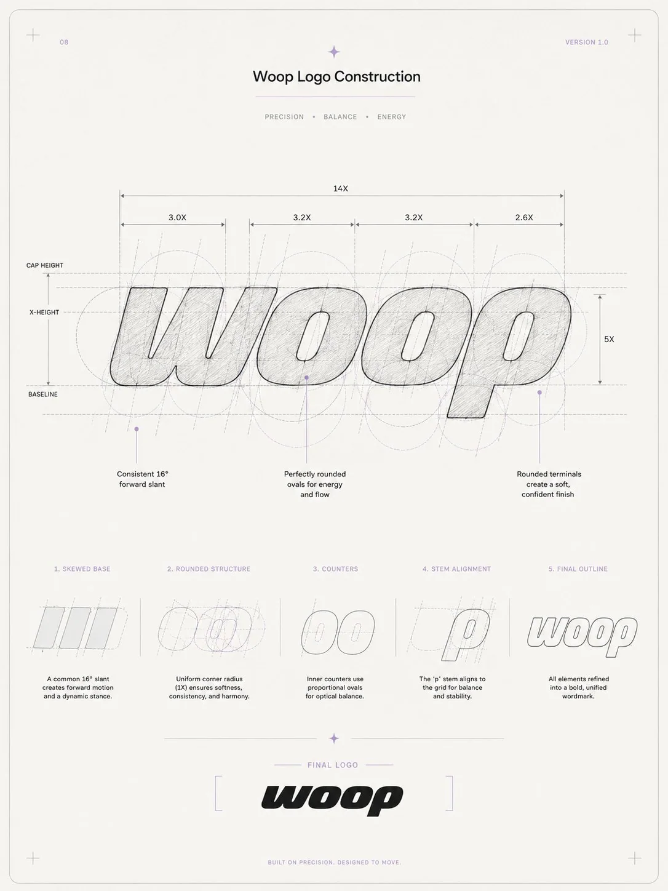
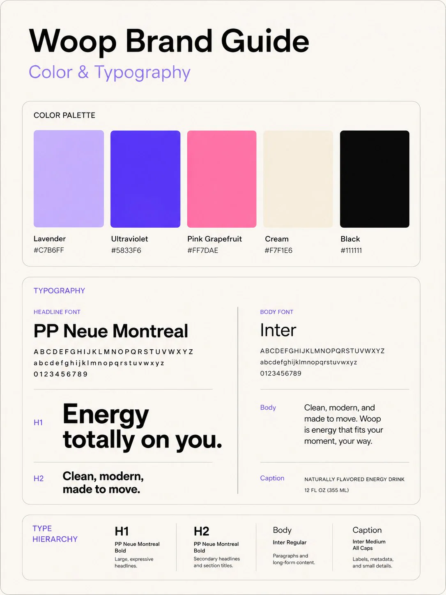
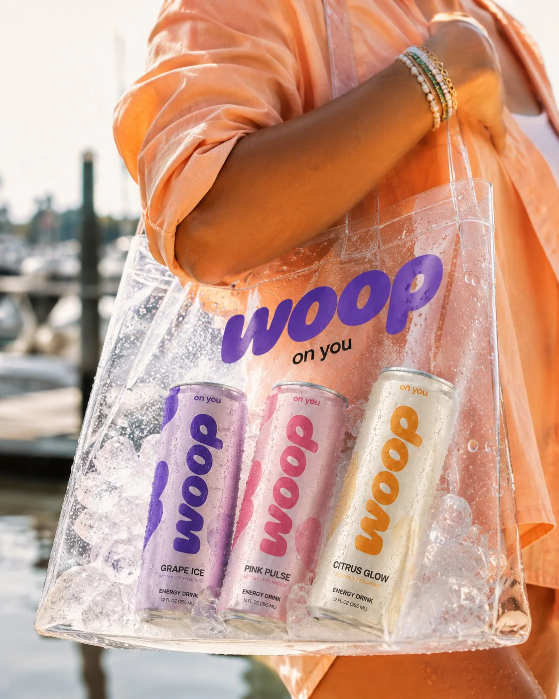
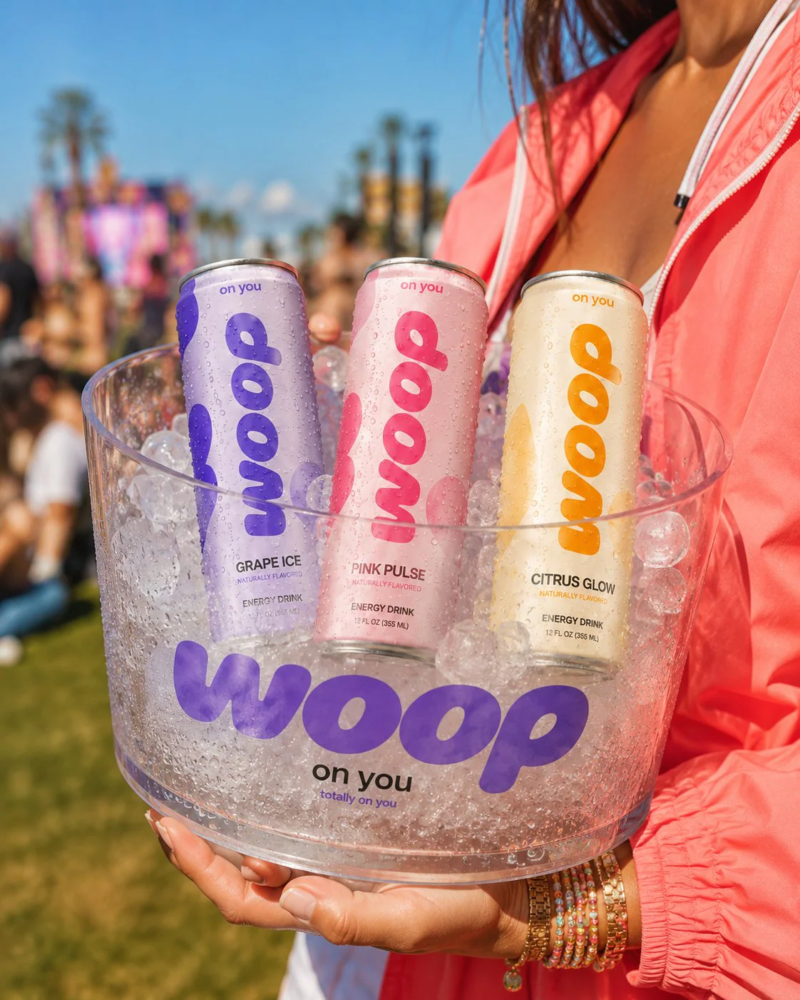
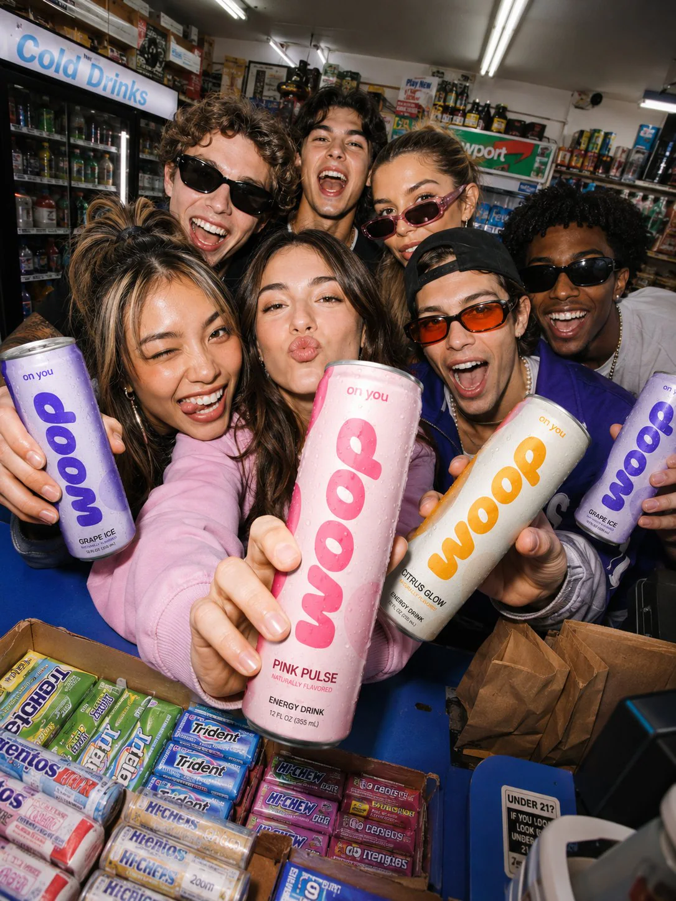
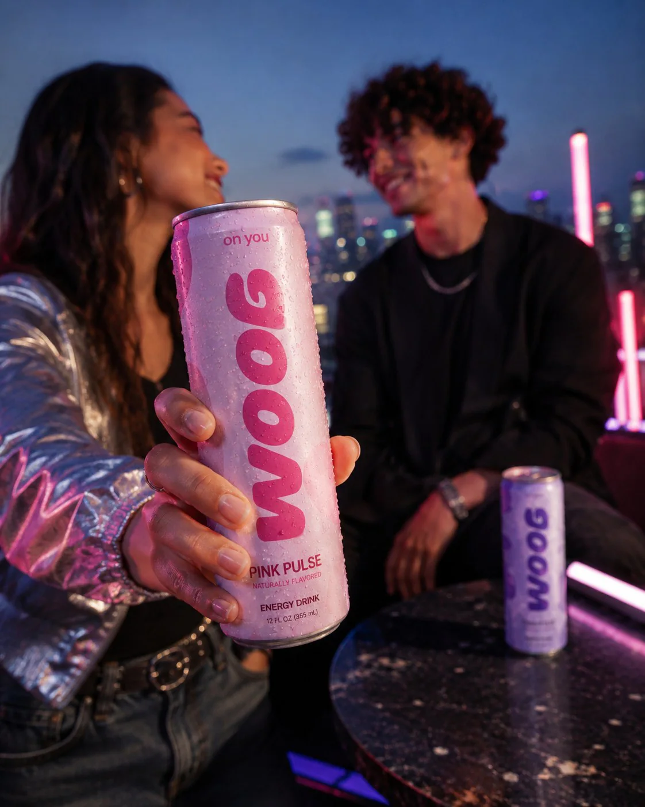
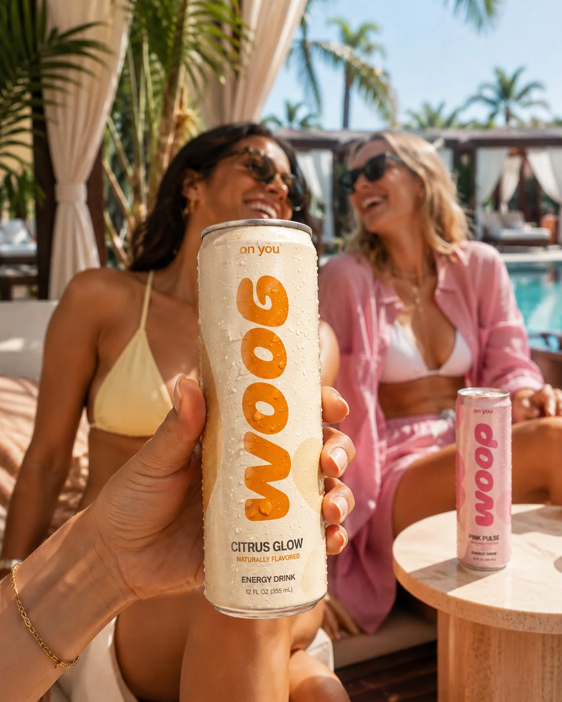
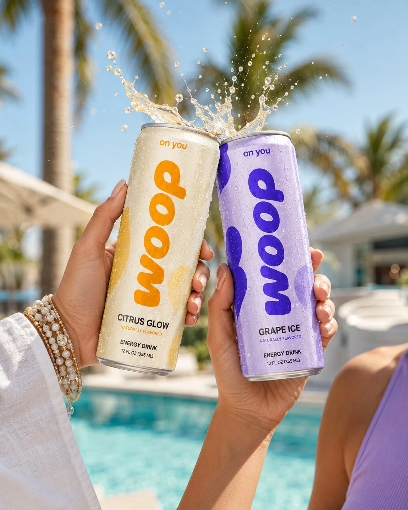
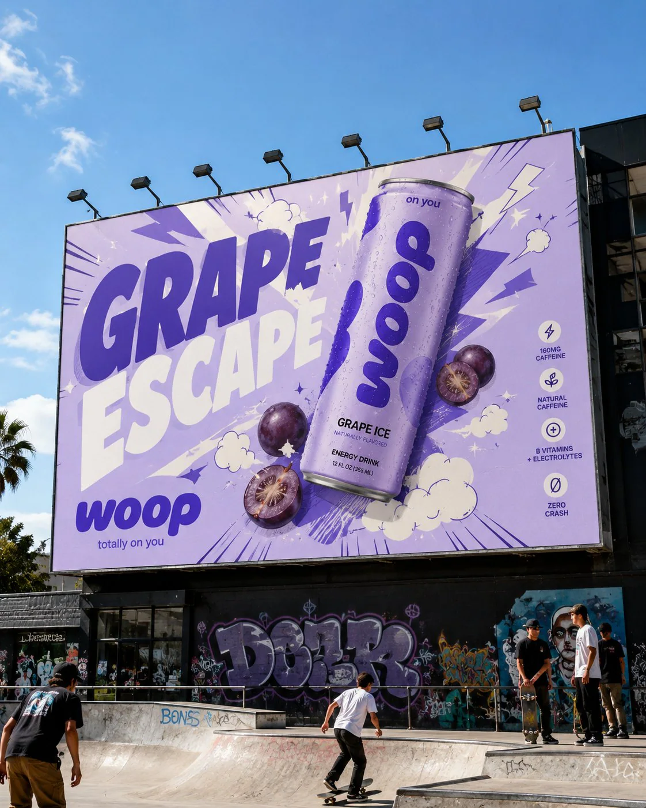
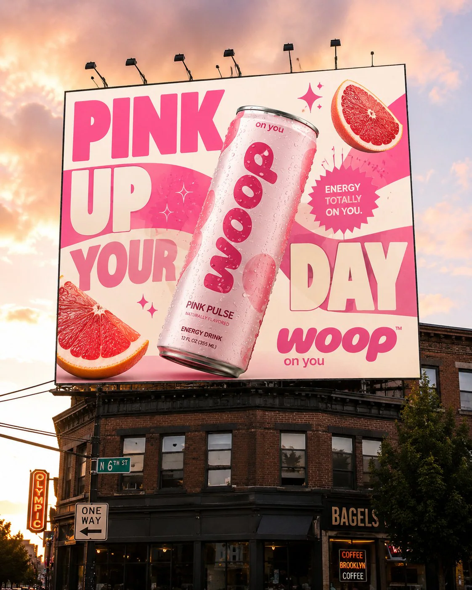

(03)
woop
(project summary)
A brand and packaging system for Woop — a naturally flavoured energy drink built to feel like a good time rather than a warning label. Three flavours, one rounded wordmark, and a palette of lavender, ultraviolet, pink grapefruit and cream.
The mark is drawn on a 14x grid with a 16° forward slant, then carried onto cans, coolers, totes and two billboards — so it reads the same in a hand, in an ice bucket and from across the street.
(project segments)
brand identity
packaging design
campaign & out-of-home
(niche)
energy drinks — fmcg

the system
A wordmark drawn on a grid, five colours and two typefaces — fixed before anything got applied.
foundations


in the wild
Cans, coolers and totes photographed where the drink actually gets opened.
lifestyle






out of home
Two billboards, one voice — big type, one can, no explaining.
campaign

